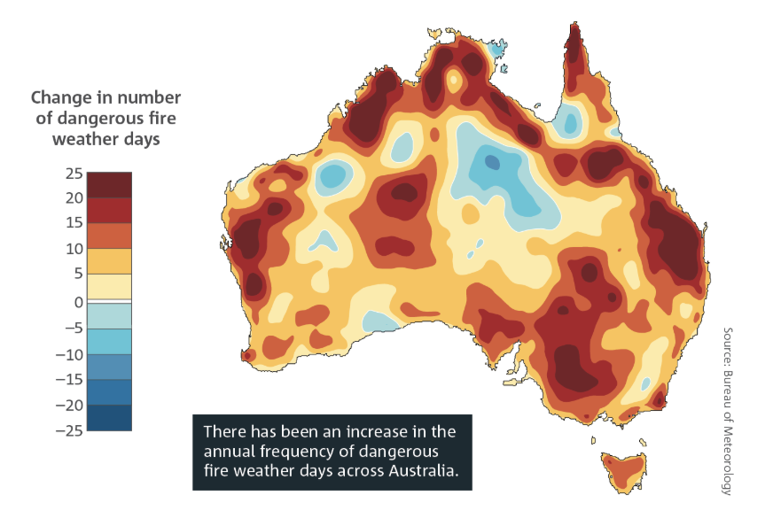

Graph 1

The data depicts a line graph of the surrounding sea surface temperature to the temperature of Australia’s surface from 1910-2030. This means it includes data that was previously collected and predicted future data based on past trends. With both sea surface and surface temperature, they both show a positive trend, however, whilst sea surface has small fluctuations while going up, surface temperature displays larger fluctuations as it increases.
Graph 2

The graph demonstrates how each year, the change in the number of dangerous fire days increases in many parts of Australia, including those which are densely populated. It evidently affects many Australians, specifically those living in high risk yet populated locations such as Melbourne, the Gold Coast, Darwin and Brisbane.
The Bureau of Meteorology (Australia) uses the FFDI (Forest Fire Danger Index) to depict the varying values of forest fire danger, with the graph ultimately scoring above the 90th percentile of conditions from July 1987 to June 2024.